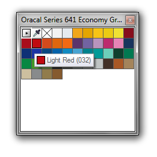

Имена цветов в палитре Х5
werter / 16.06.2010, 06:02/00:41
Форум:
у меня огромнейшая проблема с именами цвета в палитре.
я занимаюсь подрезкой виниловой пленки и долгие годы использовал палитру с именами пленок под подрезку. Например если в макете использовался Oracal 032 цвет, то в палитре у этого цвета было такое же имя. а сейчас я вижу только С:0 M:99 Y:100 K:0
точно такую же формулу я вижу в панели когда вібираю объект. для того, чтобы понять какого цвета мне нужно выбрать рулон пленки мне приходится использовать предыдущие версии, пересохраняя файл. Как можно возобновить использование имени цвета а не формулы по CMYK???
Не знаю каким именно путём вы делаете свои палитры.
Если создать свою новую палитру и сохранить её в Users\***\Documents\My Palettes\ или Мои документы\My Palettes, то цвета будут отображаться в ней именно именами, даже если цвета добавлять в неё простым перетаскиванием из любых других палитр.
К тому же, у нас на форуме есть подборка палитр для плёнок. Если их закинуть всё в ту же My Palettes, то результат будет именно тот что вам нужен.

переложил туда палитру - не помогает, все-равно только CMYK
если в палитре вместо process на цвет назначить SPOT то показывает имя цвета, но при этом только во время работа, из сохраненного раннее файла все-равно показывает только CMYK. Так что если мне приносят файл - я понятия не имею каким цветом мне принесли.
За палитры спасибо, но заставить поменять всех своих клиентов палитры только из-за того, что у меня на компе палитра не работает....
Я не говорил что палитру нужно "перекладывать", я сказал что нужно создать свою новую и перетащить туда цвета.
кстати попробовал вами рекомендуемые палитры - ничего не изменилось, тот же CMYK
Значит ждите первый сервис пак.
сделал новую, там даже в process назначил имена файлов - однако цвет отображается только CMYK
забыл прикрепить файл
ждемс